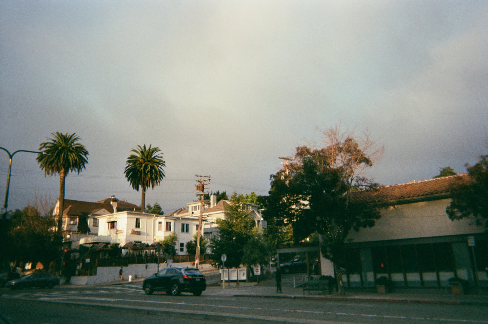
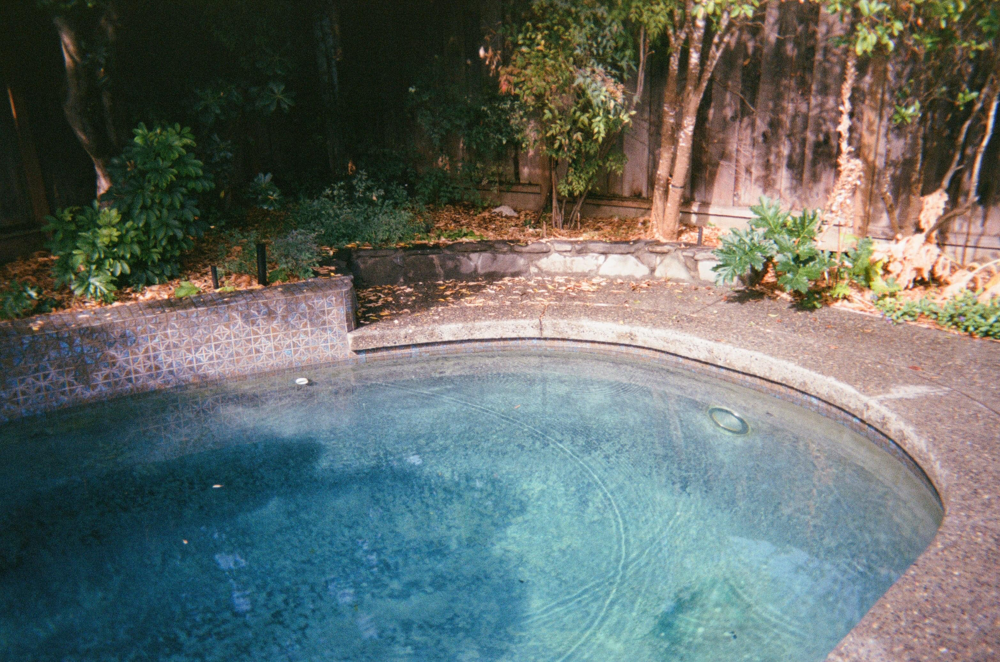
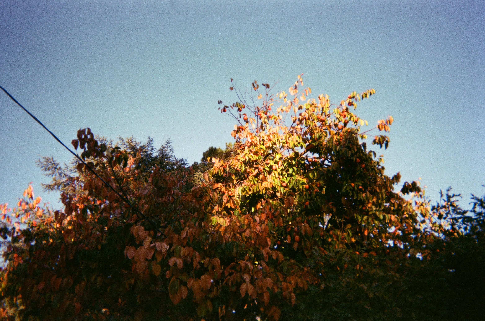

Hello, I'm green! Here are some photographs of previous expeditions into this planet Earth which I am told is the host planet of God.

I have been in this QUIET PLACE for a long time. At unexpected
times something appears; sometimes it is moving
but most of the time it is still.

It is my favourite hobby, to observe things.
I feel I am lucky that this is the case, as
there is very little else to do here. When a new image comes
I ready myself to look at it, truly look at it.

Some images take just a few years to look at, and then they are finished -- kaputt.
Other images are tricky - they give you the feeling of having been looked at, but in reality
they are inexhaustible, like a store that changes its merchandise daily
while the façade remains the same.
I like very much those images.
They give me a sense not of peace, but of something
like peace: each impression replacing the last
until I am forced to admit there might be something beyond all this, beyond this box in which I live, which I am synonymous with,
which is all I have ever known.